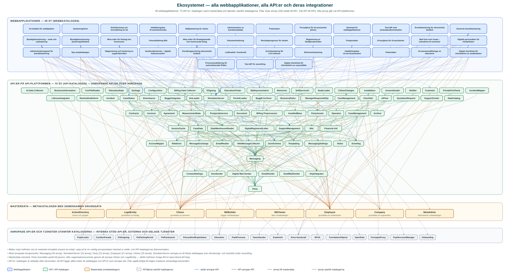

Sundsvalls kommun
Ekosystemet
Målarkitekturens översiktsbilder är medvetet abstrakta. Den här sidan visar i stället helheten som den faktiskt ser ut: alla webbapplikationer i webbkatalogen, alla API:er i API-katalogen, vilka API:er varje webb anropar och hur API:erna integrerar med varandra. Bilden är stor och tät – det är poängen. Så här ser ett ekosystem av väl avgränsade komponenter ut i verkligheten.
Hela kartan
39 webbapplikationer, 75 API:er på API-plattformen, masterdata-API:erna i metakatalogen samt anropade API:er och tjänster utanför katalogerna – med samtliga 296 anropsrelationer utritade. Bilden rullas i sidled; öppna den gärna i full storlek.

Så läser du bilden
Bilden är ordnad i band uppifrån och ned. Överst ligger webbapplikationerna (blå) – gränssnitten som invånare, företagare och medarbetare möter. De innehåller ingen egen verksamhetslogik utan skapas med API:er: varje blå pil nedåt är ett API som webben anropar via API-plattformen.
Mittenbandet är API:erna i API-katalogen (gröna). De är skiktade efter sina beroenden: ett API ligger alltid under de webbappar och API:er som anropar det, så anropen pekar nedåt genom bilden. Gröna pilar är API:er som anropar varandra – det är så kompletta lösningar sätts samman av väl avgränsade komponenter. De få pilar som böjer av åt höger och pekar uppåt markerar ömsesidiga beroenden mellan två API:er.
Näst längst ned ligger masterdata (gula) – metakatalogens API:er med gemensamma grunddata om personer, företag, organisation och medarbetare. Här syns arkitekturens masterdata-mönster tydligt: Party anropar Citizen och LegalEntity och översätter mellan partId och person- eller organisationsnummer, så att övriga API:er bara behöver känna till Party i stället för att själva hantera personuppgifter.
Längst ned samlas anropade API:er och tjänster utanför katalogerna (grå, streckade): interna stöd-API:er som ännu inte publicerats i katalogen, verksamhetsspecifika process-API:er samt externa och delade tjänster, till exempel den Intric-baserade AI-plattformen Eneo.
Några komponenter sticker ut som ekosystemets nav. Messaging är den mest anropade komponenten – all kommunikation och alla utskick går genom den. Party och masterdata-API:erna Employee och Citizen anropas från hela ekosystemet, och SimulatorServer anropas av de flesta webbappar som simulerings- och teststöd under utveckling. Det är återanvändning i praktiken: en förmåga etableras en gång och används av många.
Underlag och avgränsningar
Bilden är genererad ur katalogernas dokumentation – varje pil är en dokumenterad anropsrelation, ingen är ritad på fri hand.
Webbapplikationerna och deras API-anrop kommer från webbkatalogen och API:erna med sina inbördes beroenden från API-katalogen, där informationen i sin tur är härledd ur källkoden på GitHub. Ögonblicksbilden är från augusti 2026 och uppdateras genom att diagrammet genereras om från katalogernas data.
Några avgränsningar: bilden visar anropsrelationer, inte anropsvolymer eller flödesordning. Upphandlade verksamhetssystem syns bara indirekt, via de integrations-API:er som ansluter dem (till exempel ByggrIntegrator, OepIntegrator och LifecareIntegrator). Masterdata-API:erna och tjänsterna utanför katalogerna är med för att beroendena på dem ska synas, men de har ännu inga egna katalogsidor.
Detta är en fristående arbetsbild som kompletterar målarkitekturens översiktliga beskrivning. Den länkas inte från startsidan och kan komma att ändras i takt med att katalogerna växer.